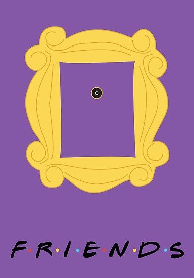

Friends (estilizado F·R·I·E·N·D·S) es una serie de televisión estadounidense creada y producida por Marta Kauffman y David Crane. Se emitió en la NBC desde el 22 de septiembre de 1994 hasta el 6 de mayo de 2004.
La serie trata sobre la vida de un grupo de amigos —Chandler Bing, Phoebe Buffay, Monica Geller, Ross Geller, Rachel Green y Joey Tribbiani— que residen en Manhattan, Nueva York. Suceden tanto buenos como malos momentos, pero con una crítica cómica a los hechos más trascendentales de la actualidad. Friends es una comedia de situación que trata temas del mundo real, a través del humor y de las risas, una oda divertida a la risa, a la amistad, el amor y la vida en la lucha dura por salir adelante a través de lo personal y lo profesional, en la que se nos recuerda que con buenas personas a nuestro lado vamos a estar bien.
La historia da inicio en un café de Nueva York, Central Perk, en el cual se encuentran los personajes: Mónica Geller, Chandler Bing, Phoebe Buffay y Joey Tribbiani; donde también se incorporan con el paso de los minutos Ross Geller y por último Rachel Green. Este encuentro da comienzo a una etapa donde seis amigos viven en la ciudad de Nueva York. Es una comedia basada en la amistad, los buenos y malos momentos como: los triunfos, el amor, el pasado y el futuro.
Inmediatamente después del éxito en su país, el programa comenzó su difusión por todo el mundo con similares resultados. En marzo de 2019, fue considerada por The Hollywood Reporter como la mejor serie de la historia,[1] siendo también votada en 2018, según Ranked, como la mejor comedia de situación de todos los tiempos.